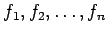
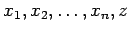
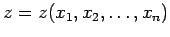
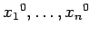
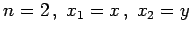
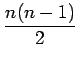
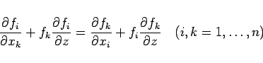
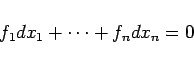
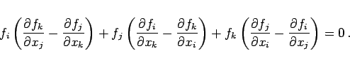

Inhalt Index DeskTop Bronstein

 Differentialgleichungen Partielle Differentialgleichungen Partielle Differentialgleichungen 1. Ordnung Nichtlineare partielle Differentialgleichungen 1. Ordnung
Differentialgleichungen Partielle Differentialgleichungen Partielle Differentialgleichungen 1. Ordnung Nichtlineare partielle Differentialgleichungen 1. Ordnung


Gleichungen dieser Art haben die Gestalt
wobei die  gegebene Funktionen der Variablen  sind. Man spricht von einer vollständig integrierbaren Differentialgleichung, wenn sich eine eindeutige Beziehung zwischen den angeben läßt, die einen frei wählbaren konstanten Faktor enthält, und die auf die Gleichung (9.78a) führt. Dann existiert eine eindeutige Lösung  von (9.78a), die für die Anfangswerte  der unabhängigen Veränderlichen einen vorgegebenen Wert z0 ergibt. Daraus folgt für , daß durch jeden Raumpunkt eine und nur eine Integralfläche verläuft.
Vollständige Integrabilität gibt es für die Differentialgleichung (9.78a) dann und nur dann, wenn die  Beziehungen
|  | (9.78b) |
in allen Variablen identisch erfüllt sind.
Wenn die Differentialgleichung in der symmetrischen Gestalt
|  | (9.78c) |
gegeben ist, dann lautet die Bedingung für die vollständige Integrabilität für alle Kombinationen der Indizes i, j, k
|  | (9.78d) |
Liegt vollständige Integrabilität vor, dann kann die Auflösung der Differentialgleichung (9.78a) auf die Integration einer gewöhnlichen Differentialgleichung mit n-1 Parametern zurückgeführt werden.